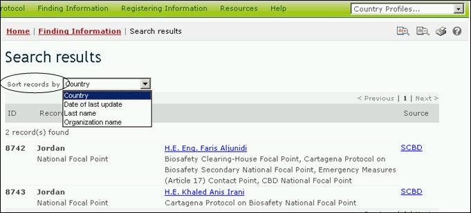

بغية تغيير الطريقة التي سوف يصنَّف بها بحث ما، يستطيع المستعمِل أن يختار خياراً من الخيارات من قائمة الاختيارات المنسدلة، يُصنف النتائج حسب (Sort results by)، الذي يظهر في أعلى أي صفحة بنتائج البحث. وستشمل قائمة الخيارات فحسب تلك الخيارات التي تعتبر ذات صلة بنوع البحث الذي أجراه المستعمل.

صورة 65
وتشمل خيارات التصنيف التي قد تكون متوافرة للمستعملين ما يلي:
البلد: يعرض نتائج البحث مرتبة أبجدياً حسب اسم البلد؛
تاريخ التحديث الماضي: يعرض نتائج البحث حسب التاريخ الذي أضيفت فيه أو تم تحديثها، مع أحدث السجلات المعدَّلة التي تظهر أولاً؛
اسم العائلة: يعرض نتائج البحث أبجدياً حسب اسم عائلة الشخص أو نقطة الاتصال؛
سمة الكائن الحيّ المحوَّر: يعرض نتائج البحث أبجدياً حسب السمة أو الخصيصة المُدخلة. (للاطلاع على قائمة كاملة بالسمات المُدخلة، انظر مجال ’سمات الكائنات الحيَّة المحوَّرة‘ في مكنز غرفة تبادل معلومات السلامة الأحيائية)؛
اسم الجين: يعرض نتائج البحث أبجدياً حسب اسم الجين المُدخَل. (للاطلاع على قائمة كاملة ووصف الجينات المدرجة، انظر سجل الجينات)؛
اسم الكائن: يعرض نتائج البحث أبجدياً حسب اسم الكائن الأصلي، أو الكائن المتلقى أو الكائن المانح. (للاطلاع على قائمة كاملة ووصف للكائنات العضوية في غرفة تبادل معلومات السلامة الأحيائية، انظر سجل الكائنات العضوية)؛
اسم المنظمة: يعرض نتائج البحث أبجدياً حسب المنظمة (المنظمات قد تشمل السلطات الوطنية المختصة أو منظمات السلامة الأحيائية)؛
تاريخ الابتداء: يعرض النتائج حسب التاريخ الي ستبدأ فيه مشاريع أو فرص بناء القدرات؛
مجال الموضوع: يعرض نتائج البحث مصنَّفة في مجموعات وفقاً لمجال الموضوعات المعالجة (أي نوع الكائن الحيّ المحوَّر أو الاستخدام المقصود)؛
الحالة التصنيفية: يعرض نتائج البحث أبجدياً وفقا للاسم العلمي للكائن العضوي؛
الطريقة التقنية المستخدمة: يعرض نتائج البحث أبجدياً حسب الطريقة التقنية المستخدمة لإدخال التحوير؛
العنوان: يعرض نتائج البحث أبجدياً حسب عنوان السجل المقيّد؛
نوع السجل المقيَّد: يعرض نتائج البحث مصنَّفة في مجموعات وفقاً لنوع السجل؛
التحديد الفريد للهوية: يعرض نتائج البحث بطريقة أبجدية رقمية حسب رمز التحديد الفريد للهوية. (للاطلاع على قائمة كاملة ووصف لرموز التحديد الفريد للهوية، انظر سجل الكائنات الحيَّة المحوَّرة - (رموز التحديد الفريد للهوية).